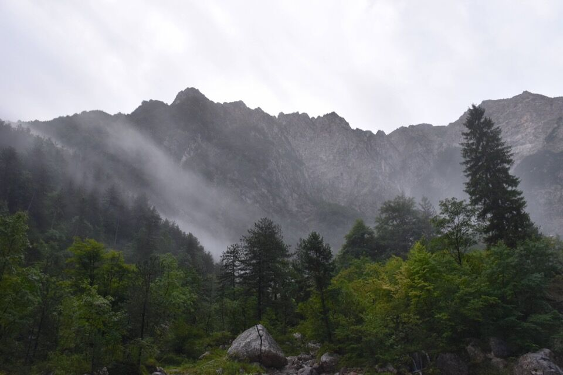
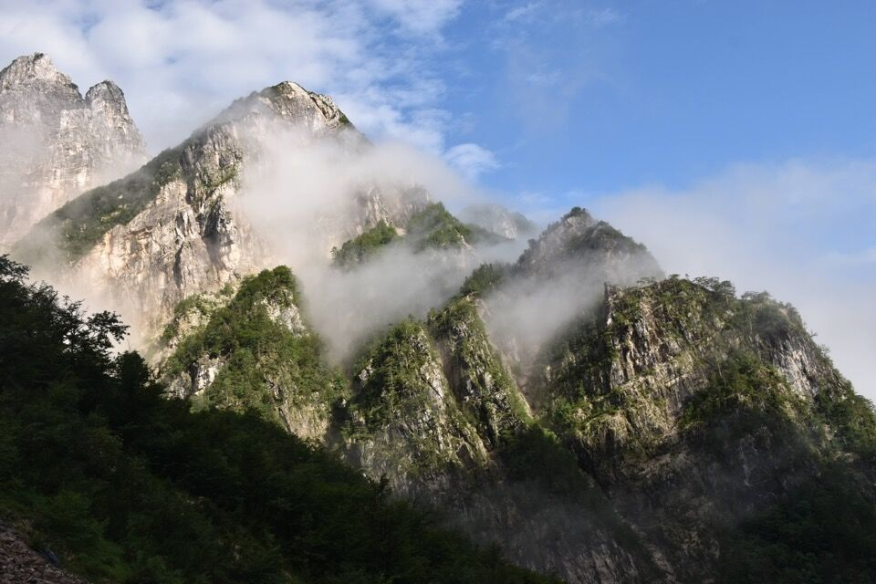
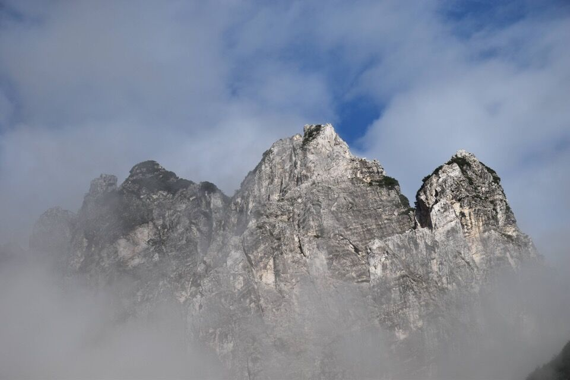
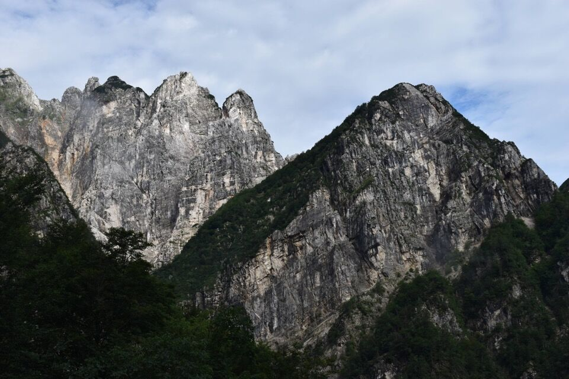
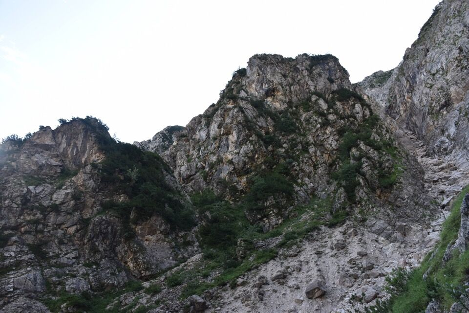
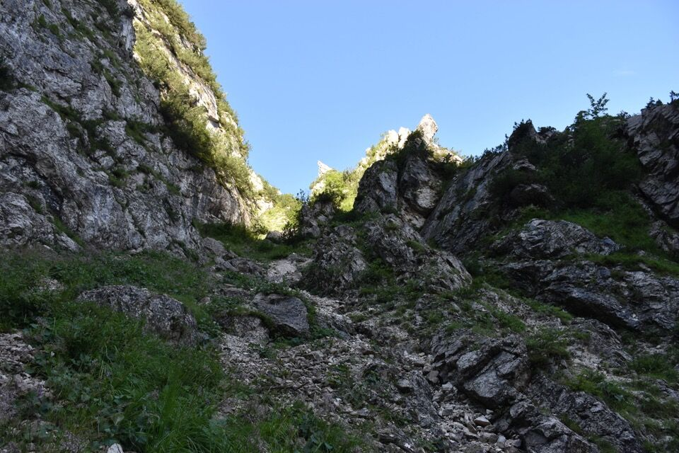
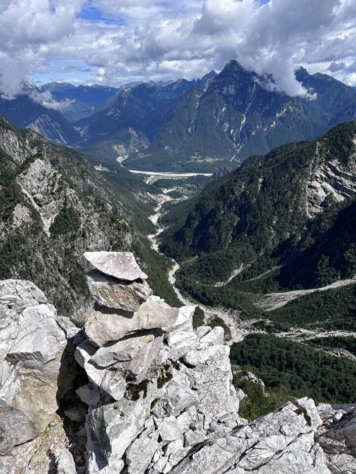
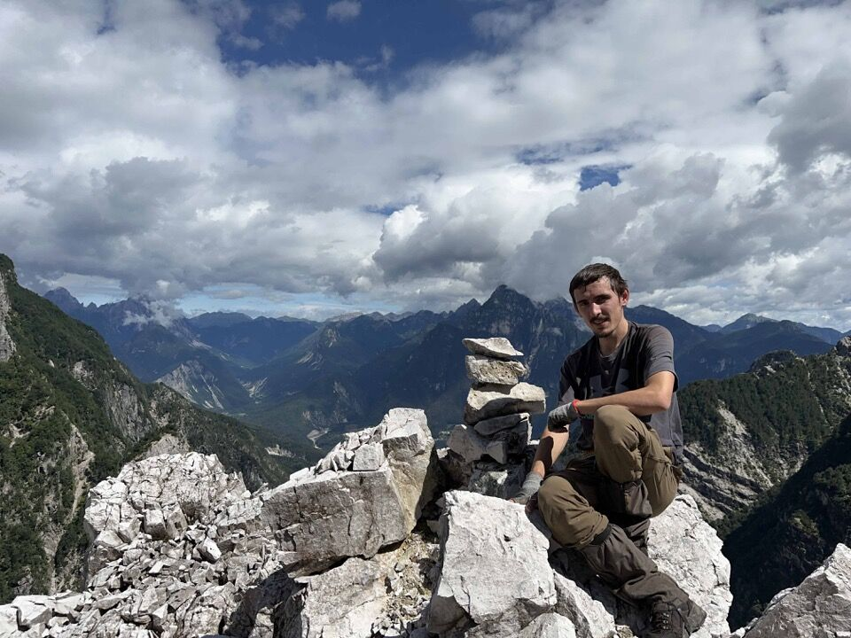

La Punta Grisis è una di quelle cime di cui non si trova alcuna informazione da nessuna parte, né in letteratura né su internet; mi sembra un delitto pubblicare la mia salita, anche perché effettivamente durante tutto il tragitto non ho trovato né un segno, né un omino, né un taglio, né un ramo spezzato, né un ometto di vetta, insomma nulla di nulla (senza contare le non trascurabili difficoltà oggettive). Prima assoluta? Non siamo ridicoli!
Salgo per l'ennesima volta verso il ricovero Resartico, in una strana mattinata di un gelido agosto. Ogni volta osservo la lunga cresta che dal Lávara scende fino a Vetta Criuze... chissà!
Il meteo insolito mi regala alcune visioni molto affascinanti sul Palòn dei Zábus...
...e sulle sue possenti torri.
Pian piano abbandono la civiltà e mi inoltro nelle orride gole settentrionali del Lávara (tutta la zona è denominata Grisis - sostanzialmente pietraia).
L'angolazione verso il Palòn dei Zábus e le sue torri è davvero bella.
 La ricerca della via mi ha impegnato parecchio - magari fosse cosí facile come in questa foto.
Dietrofront?
Da un intaglio vedo bene il Palòn dei Zábus, con il canalone ESE; mi ha sempre incuriosito quello strano blocco con caverne che sembra ostruire la forcella.
(Ci sono passato sotto, nell'altro versante (Serai), l'anno seguente percorrendo la via da Ovest al Palòn dei Zábus)
Le due cime di Pale di Misdí, del massimo interesse viste da qui ma insignificanti da Sud e dalla val Lavaruzza.
Ma alla fine il canale giusto — non facile — lo trovo.
Ho costruito un bell'ometto in cima, anche se col senno di poi lo rifarei in un luogo piú stabile.
 L'ambiente è davvero affascinante, ancorché orrido: tutto il versante Nord del Lávara è friabile e derupato. Il gran canalone a Ovest del Lávara, che si vede nella prima foto, è storicamente conosciuto come il modo piú veloce per salire sulla cima partendo dal Resartico; si trova una relazione nella Guida delle Prealpi Giulie del Marinelli. Il canalone nella seconda foto invece presenta salti per nulla indiffenti nella parte alta.
Dalla cima si vede il Ricovero Resartico...
...e viceversa!
Questa è una delle realizzazioni di cui vado piú fiero.
Aggiunta successiva. In realtà non è proprio vero che non si trova nulla in letteratura: Mario e Massimo di Gallo hanno salito l'orrida parete Nord del Lávara partendo dalla selletta a Nord della Punta Grisis (Póntis Grísis nella loro grafia), vedi qui.